Il problema
Le infezioni correlate all'assistenza (ICA) e l'antimicrobico-resistenza (AMR) sono una delle
principali emergenze di sanità pubblica.
In Italia oltre 10.000 decessi ogni
anno sono attribuibili a questo fenomeno con un impatto significativo su pazienti, strutture e
costi sanitari.
Le strutture sanitarie territoriali sono in prima linea: per affrontare questa sfida servono modelli integrati, digitali e data-driven.
La nostra soluzione
Outsmart (OUTpatient Stewardship, Managing Antimicrobial Resistance and Treatment) è una startup innovativa, Spin Off accademico dell'Università di Torino, che offre servizi per le strutture sanitarie nella stewardship antibiotica. La nostra piattaforma SaaS combina:
Intelligenza artificiale per modelli predittivi e ottimizzazione della gestione dei dati
Expertise infettivologica e igienistica on demand
Monitoraggio continuo dell'epidemiologia locale e dei consumi antibiotici
Formazione digitale e in presenza su protocolli di prevenzione e stewardship
Con Outsmart, le strutture sanitarie territoriali possono:
- Migliorare la gestione delle infezioni correlate all'assistenza e di conseguenza la sicurezza dei pazienti
- Monitorare ed ottimizzare le prescrizioni antibiotiche nonché l'andamento epidemiologico nella propria struttura
- Garantire conformità agli standard e alla normativa vigente
Perché Outsmart
- Approccio multidisciplinare e innovativo: igiene + infettivologia + AI
- Pacchetti modulari e abbonamenti scalabili, adatti a ogni struttura
- Coinvolgimento diretto degli stakeholder per soluzioni personalizzate
- Valutazione continua dell'efficacia e costo-efficacia degli interventi
Dai valore alla qualità della tua assistenza.
Scopri come Outsmart può supportare la tua struttura per una gestione efficace e innovativa della stewardship antibiotica